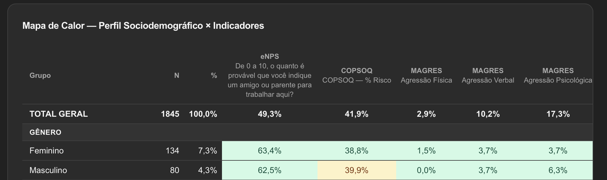
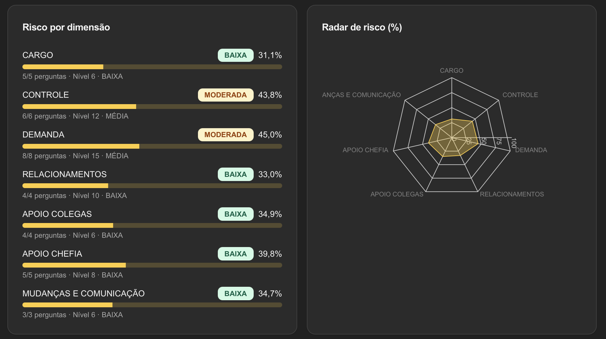
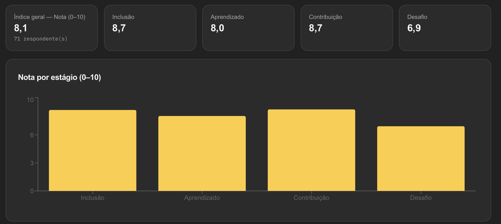
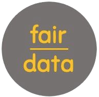
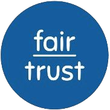

fairdata · inteligência de dados de pessoas
Seu turnover subiu. A fairdata mostra por quê, por área e liderança.
O que é a fairdata
Uma plataforma de pesquisa que mostra onde está o problema da equipe, e por quê.
- 01
Pergunta
Pesquisas curtas e anônimas com os colaboradores sobre bem-estar, saúde mental, segurança psicológica e risco psicossocial.
- 02
Analisa
Cruza as respostas por área, liderança e perfil, e com turnover, absenteísmo e sinistralidade.
- 03
Entrega
Um plano de ação priorizado e a base do PGR que a NR-1 exige.
Clima e eNPS dizem o quê. A fairdata diz por quê.
Por que isso importa agora
A NR-1 passou a exigir a gestão do risco psicossocial.
A empresa precisa identificar, avaliar e controlar esses riscos no PGR, com plano de ação documentado.
- ago/2024A Portaria MTE 1.419 inclui os riscos psicossociais no gerenciamento de riscos ocupacionais.
- 26/05/2026A exigência passa a valer, depois de um ano de adiamento.
- 25/06/2026O STF suspende as multas ligadas ao tema enquanto os critérios são discutidos.
- 24/09/2026A suspensão é prorrogada por 90 dias. A obrigação continua valendo.
A obrigação já existe. Falta a base para cumpri-la.
Fontes: Portaria MTE 1.419/2024; Portaria MTE 765/2025 (adiamento); STF, ADPF 1316 (decisões de 25/06/2026 e 24/09/2026).
Na prática
7 dimensões de risco, 35 perguntas.
Vai levar isso ao financeiro? Salve este post: o método inteiro está nos próximos slides.
Tela da plataforma fairdata (app.fairdata.com.br): risco por dimensão, com o número de perguntas e o nível de risco de cada uma.
O que a fairdata mede
4 rastreadores, uma plataforma.
01
Bem-estar organizacional
Onde o ambiente gera desgaste, antes de virar turnover ou afastamento.
02
Saúde mental
Risco psicossocial mapeado com base auditável para o PGR da NR-1.
03
Segurança psicológica
Confiança, expressão e contribuição nas equipes. Qualifica a relação entre líder e liderado.
04
Diversidade e inclusão
A experiência real de grupos diversos, além do headcount.
Tudo cruzado por área, por liderança e por perfil.
Como funciona
Do dado ao plano de ação, em 4 etapas.
- 01
Diagnóstico de base
Pesquisas nos 4 rastreadores, com coleta estruturada.
- 02
Causa-raiz
As dimensões que mais pesam nos indicadores, por área, liderança e perfil, cruzadas com turnover, absenteísmo e sinistralidade.
- 03
Painel e OKRs
Indicadores e metas de bem-estar priorizados pelo impacto no negócio, na linguagem do CFO e do conselho.
- 04
PGR
Riscos psicossociais mapeados e plano de ação documentado para a NR-1.
A empresa sabe o que fazer primeiro.
Por que não é a mesma coisa
O que costuma chegar ao RH. O que a fairdata entrega.
O mercadoA fairdata
Score de aderênciaCausa-raiz cruzada com os indicadores de RH
Relatório descritivoPlano de ação priorizado por impacto financeiro
Dados de clima isoladosDados ligados ao PGR e ao cuidado da fairhealth
Fotografia do momentoMonitoramento contínuo, com linha do tempo
Pesquisa de clima diz o quê. A fairdata diz por quê, e quanto custa.
Por que confiar nos dados
Anônimo na coleta. Auditável no resultado.
- Dados anonimizados na coleta, em linha com a LGPD.
- Curadoria no início do projeto, para não sobrecarregar a equipe com pesquisas.
- Plataforma ativada em menos de 24 horas. Primeira pesquisa em até 3 dias úteis.
A FairJob foi fundada por Fernando Brancaccio, pós-graduado em Neurociências pela Faculdade de Medicina da Santa Casa de SP e por 10 anos diretor de RH de uma multinacional.
Fonte: fairdata (prazos de implantação e regras de anonimato da plataforma).
Não termina no diagnóstico
O dado da fairdata orienta o resto do ciclo.

Cuidar
O Escritório do Cuidado age onde a causa-raiz apontou.
Conscientizar
A formação de lideranças começa pelos gaps que os dados revelam.

Comprovar
A acreditação se apoia em evidência contínua, não numa fotografia anual.
Você começa medindo. Termina com comprovação.
Próximo passo
Mostre onde estão seus desafios. A gente mostra de onde vêm.
Fale com um especialista da fairdata. Retorno em até 1 dia útil.
Falar com um especialista →
- Sitefairjob.com.br/fairdata
- E-mailola@fairjob.com.br
fairdata · Medir